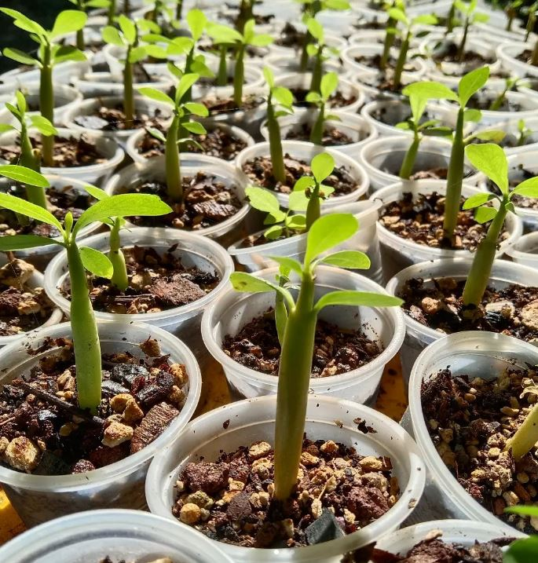

A c a f l o r
Ser partícipes en impulsar la cadena productiva agrícola, ornamental y forestal a través de la generación de plantas de calidad usando tecnologías de punta y en un entorno de desarrollo humano sustentable.
¿quienes somos?
Acaflor, Flores de Acayucan S.P.R.L. de R.L. se constituyó oficialmente en el año 2012 a iniciativa de un grupo de personas interesadas en la producción de plantas ornamentales en el municipio de Acayucan, en el sur del estado de Veracruz. Mismos que ya venían produciendo algunas plantas de forma tradicional a través de semillas y esquejes. Además el grupo venía coleccionando y rescatando orquídeas silvestres locales y con un fuerte interés en la comercialización de orquídeas híbridas comerciales, es así que aprovechando que algunos miembros del grupo tenían conocimiento y experiencia en la producción de plantas in vitro, es decir, la producción de plantas en medios artificiales en un laboratorio, en el 2013 Acaflor hace una fuerte inversión y establece un laboratorio de cultivo in vitro de plantas, siendo violetas africanas y orquídeas phalaenopsis las primeras en cultivarse por este proceso. Siendo así que para el año 2013, Acaflor se posiciona como la única empresa viverista que emplea métodos biotecnológicos en sus procesos productivos en la región sur de Veracruz. A la fecha se ha mantenido la producción de orquídeas y otras plantas de interés comercial, pero también se ha contribuido con la conservación y reproducción in vitro de especies de orquídeas silvestres de la zona.